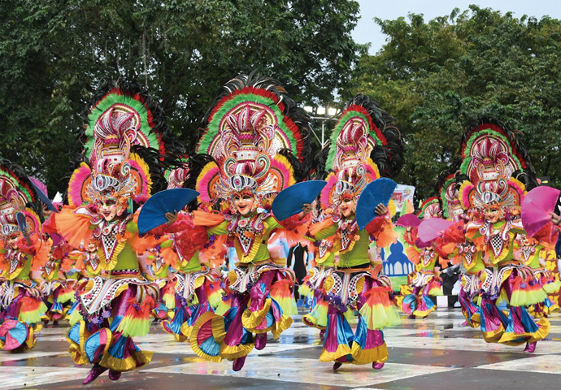

Why is Bacolod called the City of Smile?
It is known as the City of Smiles because of its MassKara Festival, a Mardi Gras-like.
festival and a spectacularly vivid mix of dance, color and music. Bacolod is also known.
as the Land of Sweet People, and for its culinary heritage, including its inasal (a kind of
roast chicken on skewers) and sweet dessert treats.
Why is MassKara Festival known as the City of smile?
This annual festival, which is similar to Brazil's Rio
Carnival, literally translates to “many faces,” and is
celebrated every October in Bacolod. Because of the
smiling faces of the mask, Bacolod City got the
nickname of The City of Smiles.
